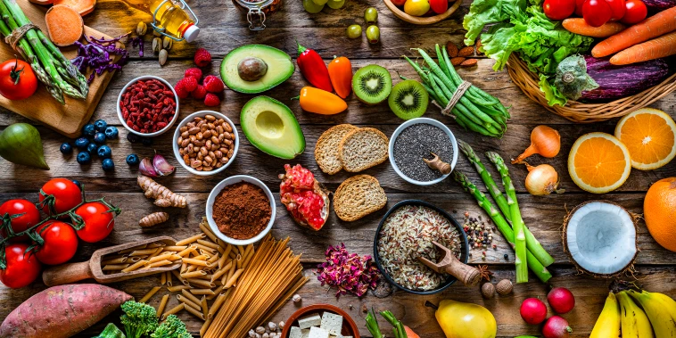
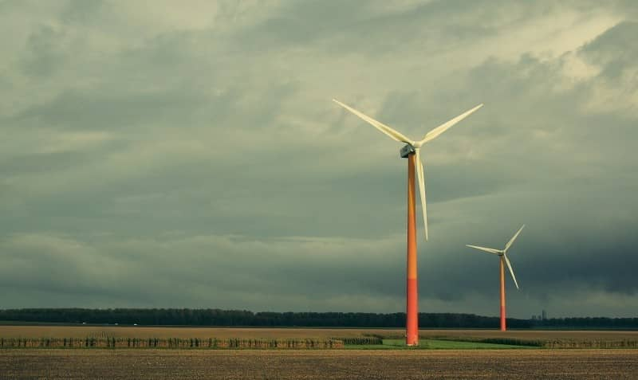

SDG 12: Responsible Consumption and Production
Ensuring Sustainable Consumption on Food, Energy and Water
SDG 12 aims to ensure sustainable consumption and production patterns by 2030. This site focuses on three key targets: Food (reducing waste), Energy (efficient use), and Water (conservation). According to the UN SDG Report 2023, unsustainable consumption contributes to 45% of global greenhouse gas emissions.



Global Statistics on SDG 12 Targets
| Target | Key Statistic | Source |
|---|---|---|
| Food | 1/3 of food produced is wasted annually (1.3 billion tons). | FAO https://www.fao.org |
| Energy | Energy intensity decreased by 2.3% globally in 2022. | IEA https://www.iea.org |
| Water | 2.2 billion people lack safely managed drinking water. | WHO https://www.who.int |
Why SDG 12 is Important
Food
Reducing food waste and promoting sustainable agriculture ensures food security for future generations. UN data shows food systems contribute 21-37% of global emissions.
Energy
Efficient energy use minimizes carbon emissions and combats climate change. IEA reports that renewable energy grew by 8% in 2022.
Water
Conserving water resources prevents scarcity and supports ecosystems. WHO estimates 80% of wastewater is untreated globally.